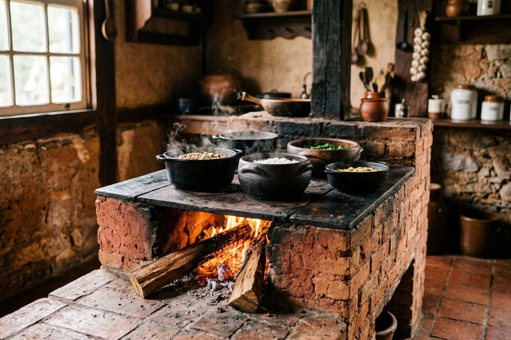

Frango com quiabo
Com angu e arroz, R$ 36
Tem frango com quiabo, feijão bem temperado e comida feita para o almoço de todo dia. Peça pelo WhatsApp ou venha comer no salão.
Pedir o almoço
Com angu e arroz, R$ 36

Com couve e torresmo, R$ 35

Carne do dia, arroz, feijão e salada, R$ 32
Pequena a partir de R$ 27
Arroz, feijão, salada e a opção de carne do dia, com acompanhamentos.
Almoço do dia em embalagem individual para retirada ou entrega.
Porção maior de arroz, feijão, salada e acompanhamento do dia.
Frango cozido com quiabo, angu e arroz, conforme disponibilidade.
Tutu de feijão com couve, arroz e torresmo.
Na Cozinha da Dona Lia, o almoço é feito cedo e servido quentinho no casarão, perto do centro de Ouro Preto. O cardápio muda conforme a panela do dia.
Tem salão, retirada no balcão e entrega de marmita na região central. Se quiser evitar espera, mande seu pedido pelo WhatsApp antes de sair.
Confira o cardápio do dia e diga se quer comer no salão, retirar ou receber.
A gente confirma disponibilidade, previsão de preparo e taxa de entrega, se houver.
Busque no balcão ou aguarde a entrega no endereço combinado.
Servimos das 11h às 14h30, enquanto houver pratos do dia.
A entrega atende a região central e bairros próximos. Mande o endereço para confirmar a rota e a taxa.
Sim. Envie o pedido pelo WhatsApp e a equipe informa o horário de retirada.
Não. As opções mudam; consulte o prato do dia antes de fazer o pedido.
Rua Getúlio Vargas, 156, Rosário, Ouro Preto - MG
Ouro Preto, MG
WhatsApp (31) 90000-0000
Telefone (31) 90000-0000
contato@exemplo.com.br